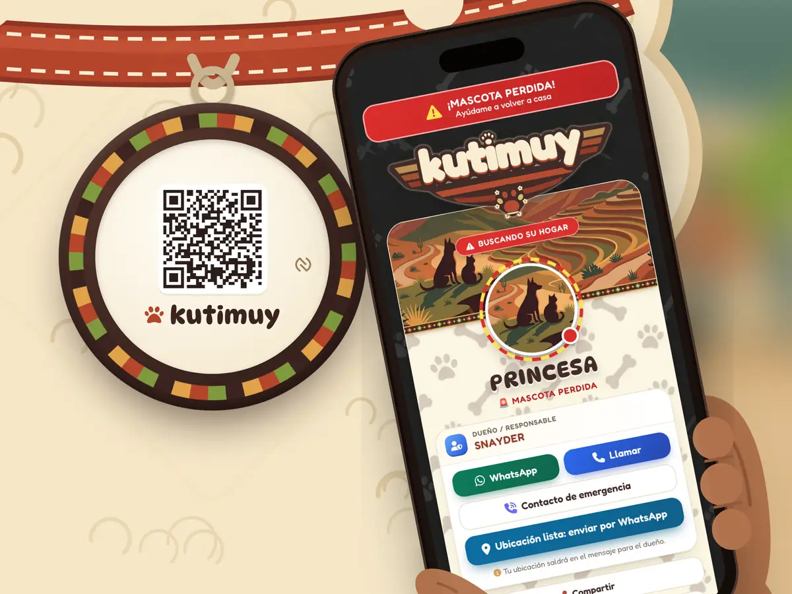
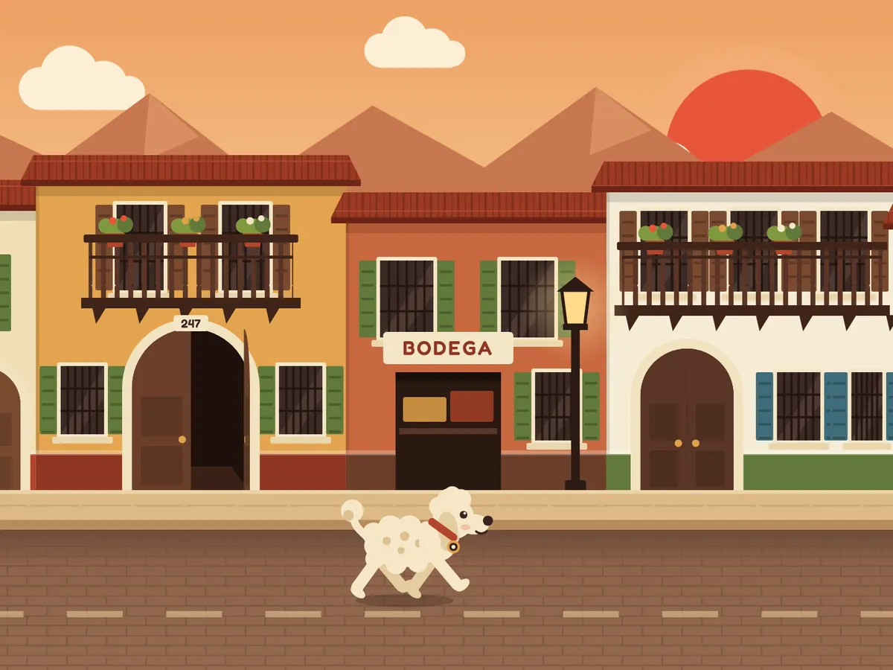
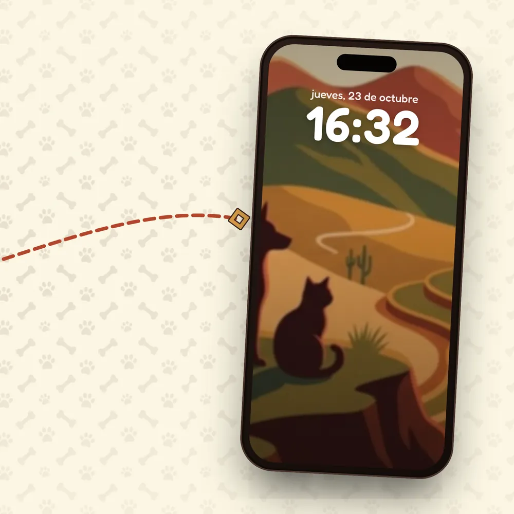
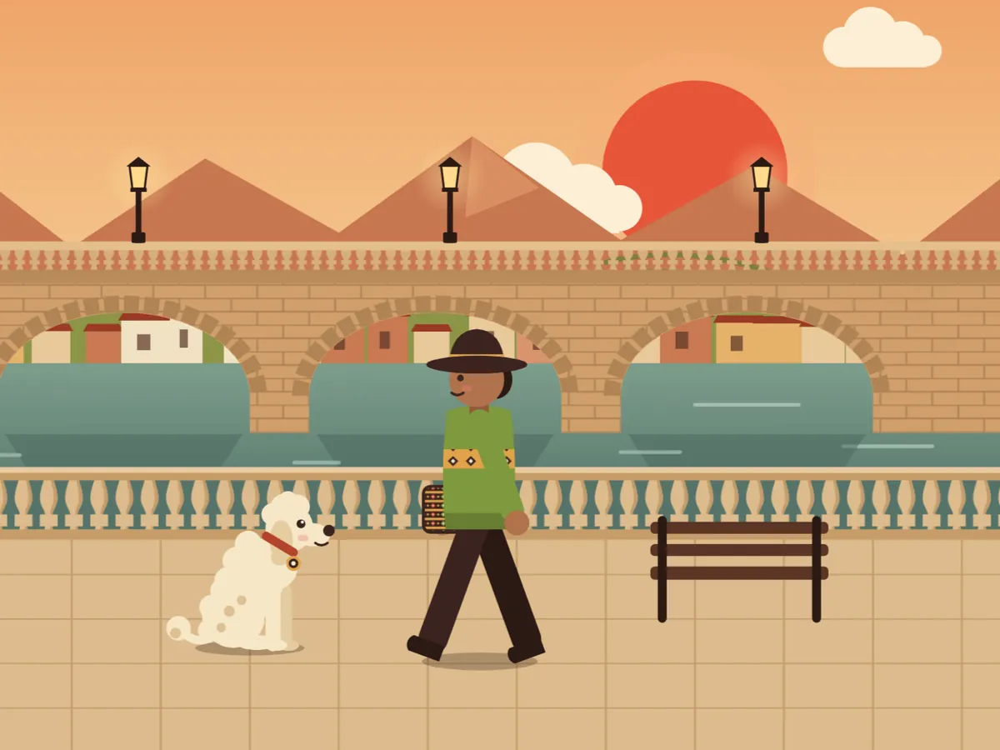
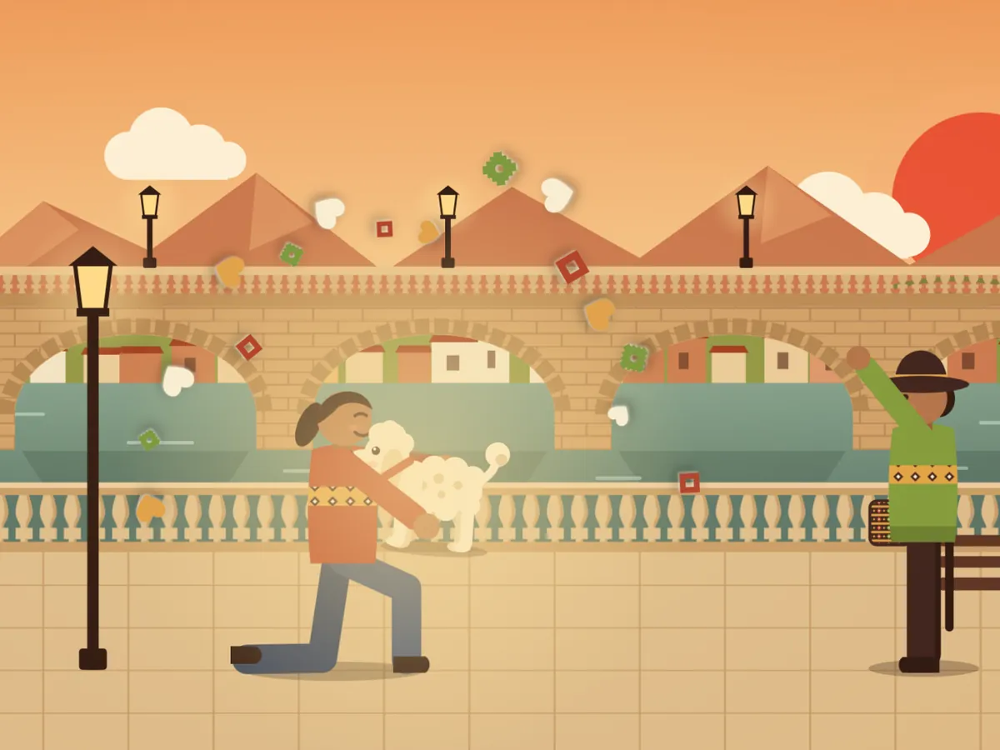

Alguien escanea su placa
Con la cámara del celular o acercándolo a la placa (NFC). No necesita instalar nada: se abre su perfil con su foto, su nombre y botones para llamarte o escribirte por WhatsApp.

Placa con código QR y NFC para su collar. Quien la encuentra la escanea con su celular, sin instalar nada, y a ti te llega el aviso al instante.

Con la cámara del celular o acercándolo a la placa (NFC). No necesita instalar nada: se abre su perfil con su foto, su nombre y botones para llamarte o escribirte por WhatsApp.

Princesa está marcada como PERDIDA y alguien acaba de escanear su placa.
Ubicación de quien escaneóCada vez que escanean su placa, Kutimuy te avisa por Telegram. Si la marcaste como perdida, quien la encontró también puede enviarte su ubicación con un toque.

Con un toque activas su alarma: su perfil pide ayuda, armas un afiche «¡Se busca!» y publicas su aviso en el canal de la comunidad, con la zona aproximada en un mapa y un botón para compartirlo por WhatsApp.
Anota sus fechas y te recordamos por Telegram cuando le toca.
Alergias, medicación y alimentación: muy útil si alguien la encuentra o en una emergencia.
Solo con tu permiso, y quedan en su historial.
Tu PIN y tus celulares de confianza protegen su panel. Diagnósticos y ubicaciones solo los ves tú.
Todas tus mascotas a un toque desde la pantalla de tu celular.
Con su foto y su código QR, listo para guardar en el celular.
Garantía de 6 meses por defectos de fabricación. Si no la activaste y conservas su empaque, puedes devolverla dentro de 7 días calendario. Condiciones
S/ 35 antes S/ 45
Comercial de Kutimuy: Princesa se escapa por las calles de Huánuco, un vecino escanea su placa y su familia recibe el aviso en Telegram.
No. Solo la cámara de su celular, o acercarlo a la placa si su celular tiene NFC.
El código QR funciona con cualquier celular con cámara. El NFC, con los Android que lo tienen y con iPhone XS o más nuevos.
No. Es un pago único: S/ 35 por lanzamiento (solo las primeras 15 placas); el precio regular es S/ 45.
Lo cambias tú mismo en su panel, con tu PIN. La placa sigue siendo la misma.
Es opcional, pero ahí te llegan los avisos cuando escanean su placa y los recordatorios de vacunas. Sin Telegram, igual pueden llamarte o escribirte desde su perfil.
Quien escanea ve su perfil y tus datos de contacto. Diagnósticos, recetas y las ubicaciones de los escaneos solo los ves tú. Privacidad y términos

Todo lo que tu mascota necesita, en una sola placa.
Pedir mi placa